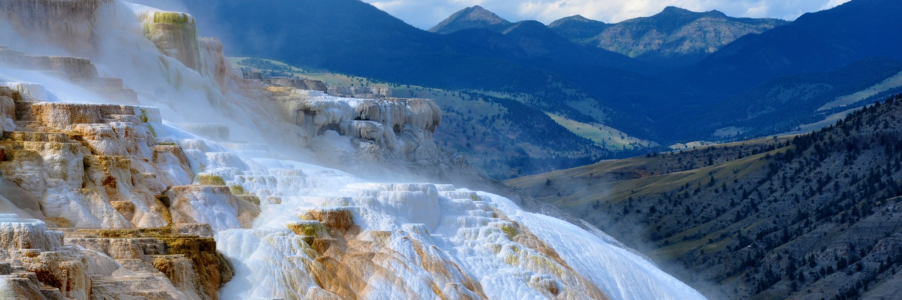
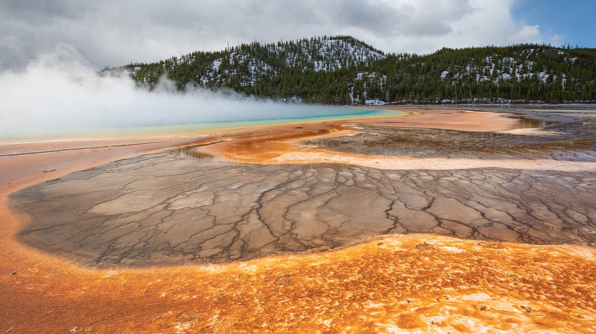
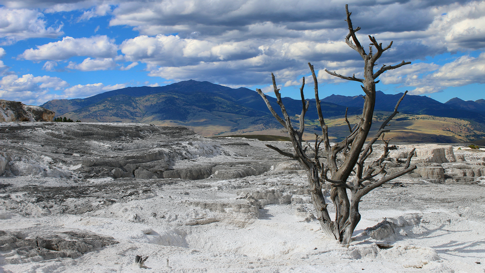

Hidden Trails and Landscapes Waiting to Be Explored
Follow winding paths through forests, mineral terraces, and open valleys where nature reveals new discoveries around every turn.
Photo by Daniil Komov on Unsplash
Exploring Landscapes Shaped by Water and Time
Overview
Across valleys, forests, and geothermal basins, natural forces have shaped landscapes that feel both ancient and constantly evolving. Trails wind through environments where mineral terraces, rivers, and mountain ridges create unforgettable scenery.
These paths reveal ecosystems where wildlife, plant life, and geological activity interact in surprising ways. Every route offers a chance to experience how water, heat, and erosion slowly transform the land.
Visitors exploring these trails often discover quiet viewpoints, unusual rock formations, and the subtle sounds of nature moving through the landscape.
Trail Highlights
Many routes cross terrain influenced by geothermal activity, flowing rivers, and centuries of erosion. Steam vents, mineral deposits, and layered rock formations add character to the landscape.
These environments support a variety of plants and wildlife that thrive in changing soil conditions and shifting water sources.
Careful exploration helps preserve fragile habitats and ensures that these landscapes remain protected for future generations.

Mineral terraces and evolving landscapes
Explore This AreaPhoto by Eberhard Grossgasteiger on Unsplash
Landscape Highlights
From dense forest canopies to open thermal valleys, each trail zone offers a distinct environment with its own character and wildlife.
Forest Trails
Quiet paths weave through dense trees where shade, wildlife, and flowing streams shape the experience.
Thermal Valleys
Hot springs and mineral terraces create unusual textures and colors across the terrain.
Mountain Views
Higher trails reveal wide panoramas of distant peaks and rolling valleys.
River Crossings
Clear streams and seasonal waterfalls bring movement and sound to the landscape.

New perspectives along every trail
View Trail MapPhoto by Eberhard Grossgasteiger on Unsplash
Planning Your Visit
Knowing what to expect before you go helps you make the most of your time on the trails and travel responsibly.
Trail Difficulty
Routes range from gentle nature walks to longer hikes across rugged terrain.
Seasonal Conditions
Weather, snowmelt, and rainfall can change trail conditions throughout the year.
Wildlife Awareness
Many trails pass through habitats where animals live and move freely.
Leave No Trace
Responsible travel helps protect fragile ecosystems and keeps trails open for others.